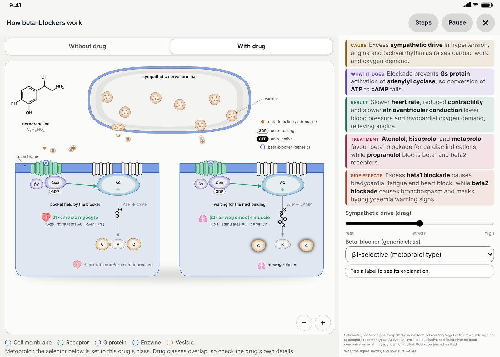
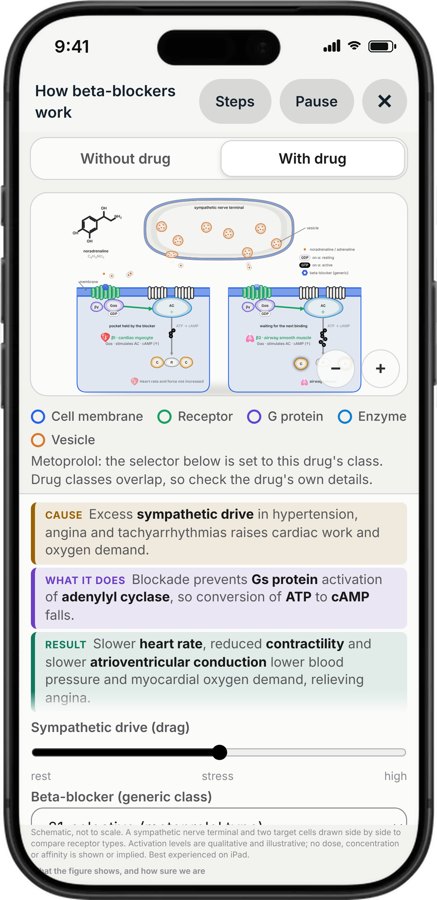
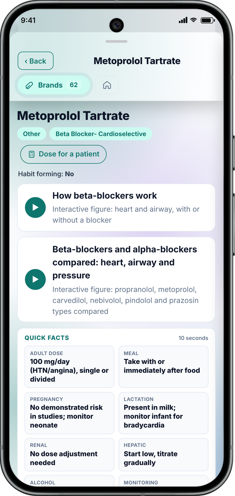

Don’t memorise the mechanism.
Watch it work.
Beta-blockers at the receptor, on the heart and the airway, with and without the drug. 337 interactive figures open from the drug page, a lesson or a question.



What is inside the app
Learn it, log it, pass it
NMC PG e-Logbook
The PGMER-2023 logbook: weekly entries, monthly guide authentication, faculty verification.
CliniX bedside skills
9 systems, 117 topics, OSCE and viva on the NMC CBME syllabus, with an AI tutor.
Kardia, Anesthetica, Tokós, Ophthalmós
Echo lab, anaesthesia, CTG and eye trainers with simulators, in English and हिन्दी.
PrepNucleus
176,430 questions for NEET-PG, INI-CET, NEET-SS, USMLE and FMGE with spaced repetition.
RadioAnatome and SURGˣ
CT, MRI and 3D anatomy; operative notes, procedures and surgical cases.
The answer, at the bedside
MaiK clinical AI
Plain-word questions, cited answers, clinical questions only, on-device options.
Dose Calculator
Weight, age, CrCl, dialysis and Child-Pugh, for this patient.
Indian antibiograms
By specimen and setting, from ICMR, NARS-Net and hospitals. Import your own.
ICU, Neonatal, Oncology
Auto SOFA and APACHE II, NICU tools, dosed chemo regimens, Code Blue with Apple Watch.
OPD, Scribe, Documents, FollowCare
Queue, on-device scribe, consent forms in English, తెలుగు, हिन्दी, WhatsApp follow-up.
for Indian wards.
- ICMR guidance
- Indian brands and prices
- NMC logbook and CBME
- ABDM ready
- Offline drug library
- KardiQ X ECGEarly access
- ThoreX chest X-rayEarly access
- FundX fundusEarly access
- SknX skinEarly access